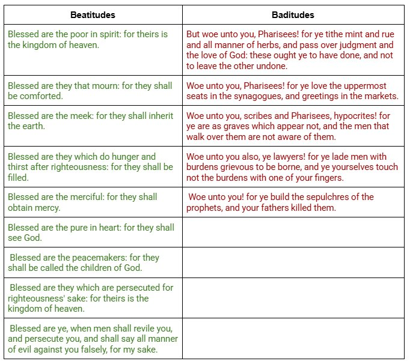

There's a lot of truth to the old adage that life is contrast and comparison. Most of the time I understand something by finding its baseline and then testing what happens above and below it. The Beatitudes have always stood on their own for me — clearly the opposite of everything I see and experience in the world — but I've never been able to fully wrap my head around each one individually.
Sometimes I think the Christian life could be summed up as: do the opposite of what everyone else is doing. Think the opposite. Do the opposite of what you're naturally inclined toward. We need God's Spirit to pull that off, of course, but isn't that essentially what Galatians 5:17 is telling us?
What made the Beatitudes land harder for me recently was seeing them next to their mirror image — the list of "woes" Jesus pronounces on the Pharisees, scribes, and lawyers later in the Gospels. Blessing on one side, rebuke on the other, both coming from the same mouth.

Read it and see if it doesn't make the Beatitudes hit even harder.
Comments